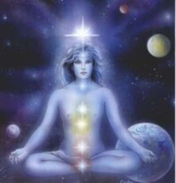

|
CHAKRAS
 In
Yoga, the seven occult centres of life and consciousness in the spine
and brain, which enliven the physical and astral bodies of man. (
Man's Eternal Quest by
Paramahansa Yogananda)
These centres are referred to
as chakras ("wheels") because the concentrated energy in each one
is like a hub from which radiate rays of life-giving light and energy.
In ascending order, these chakras are muladhara (the coccygeal,
at the base of the spine); svadhisthana (the sacral, two inches above
muladhara); manipura (the lumber, opposite the navel);
anahata (the dorsal, opposite the heart); vishuddha (the cervical, at
the base of the neck); ajna (located between the eyebrows; in actuality,
directly connected by polarity with the medulla) and sahasrara (in the
uppermost part of the cerebrum).
The seven chakras are
divinely planned exits or "trap doors" through which the soul has
descended into the body and through which must reascend by a process of
meditation. By seven successive steps, the soul escapes into Cosmic
Consciousness. In its conscious upward passage through the seven opened
or "awakened" cerebrospinal centres, the soul travels the highway to the
Infinite, the true path by which the soul must retrace its course to
reunite with God.
Yoga treatises generally
consider only the six lower centres as chakras, with sahasrara
referred to separately as a seventh centre. All seven centres, however,
are often referred to as lotuses, whose petals open, or turn upward, in
spiritual awakening as the life and consciousness travel up the spine.
THE BASE CHAKRA (Muladhara)
The first of the seven major centres is located at the
coccyx at the base of the spine and it is usually called the root or
base centre.. Its associated element is earth and it corresponds to the
sense of smell, physical energy and vitality. Here also, say the yogis,
sleeps the magic serpent known as the
kundalini. It lies coiled at the base of the spine and symbolises the
basic evolutionary life force. Once awakened it will rise through the
spine to the crown of the head and may trigger enlightenment in the
practitioner of these methods.
For our purposes, imagine the
root centre as your grounding or primary energy source. This is the
centre we can turn to if we need physical strength. The colour for this
centre is red.
THE SACRAL CHAKRA (Svadishana)
The second centre is found just below the navel and is called the Sacral
Centre. It is linked with the adrenals and the release of adrenaline
into the body. Its element is water and if this centre is out of balance
your 'flight or flight' response may be over active. This centre also
has a cleansing function by filtering out negative influences. It's
colour is orange
THE SOLAR PLEXUS (Manipura)
The next centre is found just below the breastbone and is called the
Solar Plexus centre. It is linked to the digestive system, the pancreas
liver and stomach. Its associated element is fire. This centre is our
psychic battery and the storehouse of our positive energy. Also it is
the link between the mind and the emotions and the area we process
negative feelings. An imbalance here can lead to 'butterflies' and
digestive disorders. The colour of the Solar Plexus Centre is yellow.
THE HEART CENTRE (Anahata)
In the centre of the chest is the heart centre. This is linked
to the thymus and controls the immune system. It is the seat of the
'higher or deeper' emotions such as love, tenderness, compassion and
honesty. The energies from this centre affect the heart, lungs, upper
chest, back and bronchial tubes. Its element is air and its designated
colour is green.
THE THROAT CENTRE (Visuddha)
The next centre is found at the top of the throat and its
designated colour is blue. If blue is your given colour then you need to
draw light into this centre. Its element is Ether and its traditional
correspondence is with self-expression through thoughts, writing and
speech. It is linked to the thyroid gland which controls metabolic rate.
It also influences the throat, ears, nose, mouth and neck.
THE FOREHEAD CENTRE (Ajna)
The spiritual journey of the inner light now brings us to the sixth
centre which lies in the centre of the forehead. This is often given the
nickname of 'the third eye',. It is found above and between the eyebrows
and is linked to the pituitary and pineal glands. This is the seat of
higher consciousness and spiritual powers. Telepathy,
clairvoyance and precognition are generated
by this centre and it also controls the body's eyes, nerves, head and
brain. The associated colour is a deep indigo.
THE CROWN CENTRE (Sahasrara)
The goal of the light's journey from the base of the spine
upward is to the top of the head. Normally known as the crown centre
this is the seat of the soul. As with the third eye centre this centre
also is linked to the pituitary and pineal glands. It is associated with
the perfection of mind, body and spirit. Its designated colour is violet
but in reality this centre is a mass of shimmering lights and colours
from the whole visual spectrum and beyond. We can trigger this centre by
filling it with pure light and like a fountain its light cascades
through your body uniting you with your core spiritual values.
The following are some other
Chakras: Adhara (another name of Muladhara Chakra), Amrita, Ananda,
Lalita, Balvana, Brahmadvara, Chandra, Dipaka, Karnamula, Gulhaha,
Kuladipa, Kundali, Galabaddha, Kaladaada, Kaladhvara, Karangaka,
Kalabhedan, Lalana, Mahotsaha, Manas, Talana, Mahapadma, Niradhara,
Naukula, Prana, Soma, Triveni, Urdhvarandhra, Vajra, etc.
Some of these names refer to
the six important Chakras only. There are also many minor Chakras. Some
Hathayogis say, that there are 21 minor Chakras besides 13 major Chakras
and some other Hathayogis hold that there are forty-nine Chakras while
the ancient Yogis taught that there are 144 Chakras. Talana Chakra with
its twelve red petals is located near the base of the palate and Manas
Chakra with its six petals closely associated with sensations, dreams
and astral travelling. |